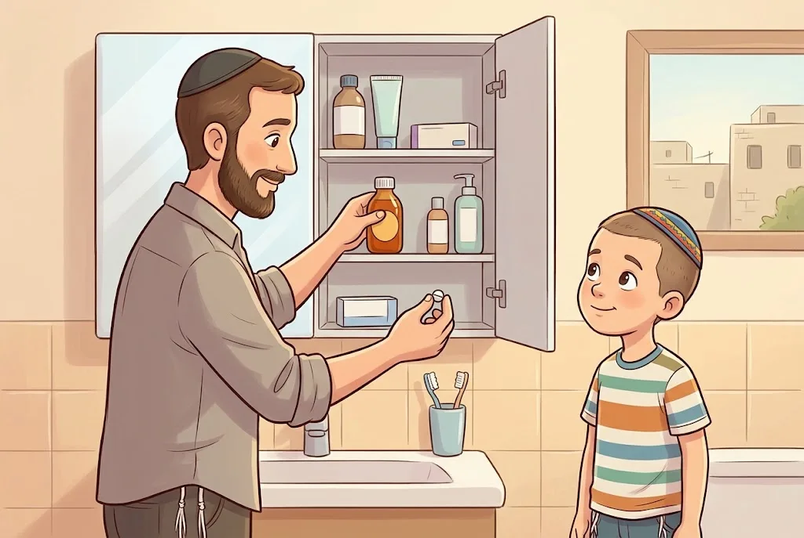
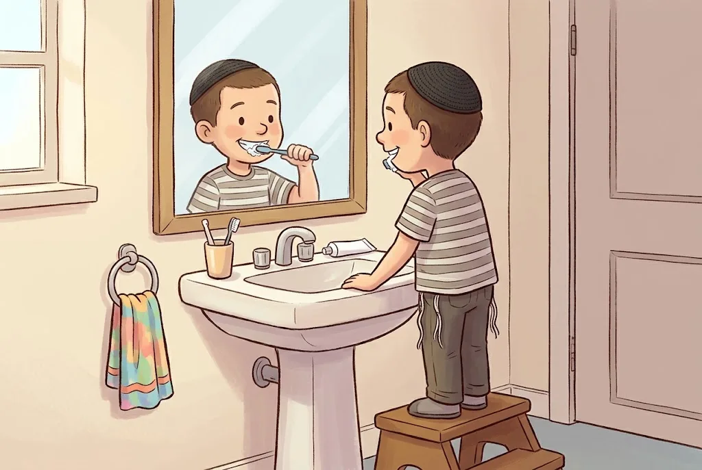
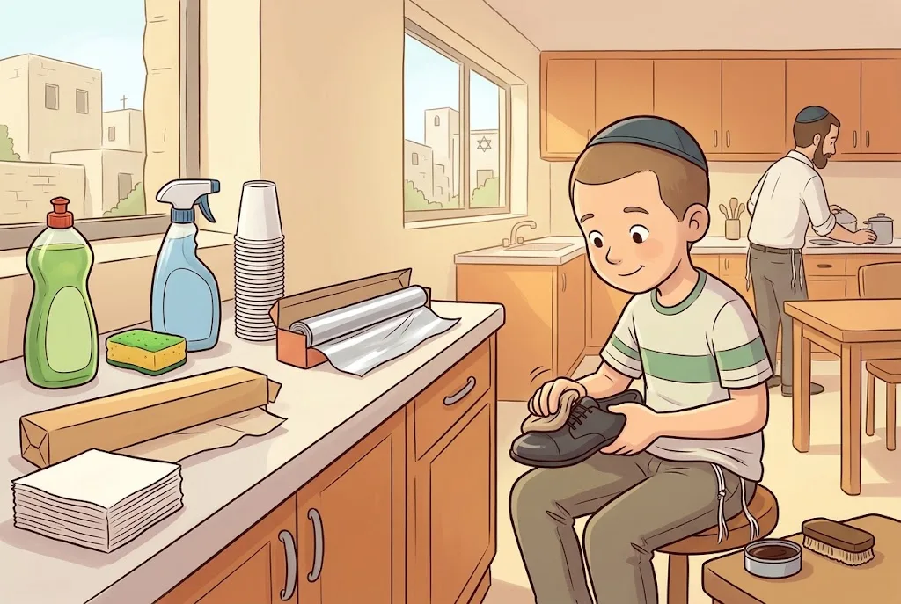

בַּסּוּפֶּרְמַרְקֶט לִפְנֵי פֶּסַח, כָּל הַמַּדָּפִים מִתְמַלְּאִים בְּחוֹתָמוֹת: ״כָּשֵׁר לְפֶסַח״. אֲבָל מָה עִם מִשְׁחַת הַשִּׁנַּיִם? וְהַסִּירוֹפּ נֶגֶד שִׁעוּל? וְהַקְּנֵידְלַאךְ שֶׁל סָבְתָא – הֲרֵי הֵם עֲשׂוּיִים מִקֶּמַח! בַּפֶּרֶק הַזֶּה נִלְמַד מָה צָרִיךְ כַּשְׁרוּת לְפֶסַח וּמָה לֹא, וְנַכִּיר אֶת הַמִּנְהָגִים הַשּׁוֹנִים שֶׁל הַסְּפָרַדִּים וְהָאַשְׁכְּנַזִּים.
1מַצָּה עֲשִׁירָה
חָמֵץ נוֹצָר מִקֶּמַח וּמַיִם. אֲבָל בָּצֵק שֶׁלָּשׁוּ אוֹתוֹ בְּ״מֵי פֵּרוֹת״ – יַיִן, דְּבַשׁ, חָלָב, שֶׁמֶן, בֵּיצִים אוֹ מִיץ תַּפּוּחִים – בְּלִי מַיִם, אֵינוֹ חָמֵץ, גַּם אִם הוּא תּוֹפֵחַ. הוּא נִקְרָא ״מַצָּה עֲשִׁירָה״. אֲבָל אִם הִתְעָרְבוּ בַּמִּיץ אֲפִלּוּ מְעַט מַיִם – הַבָּצֵק יָכוֹל לְהַחְמִיץ, וְאָסוּר לָלוּשׁ כָּךְ בְּפֶסַח.
🤔 לָמָּה? בְּלֵיל הַסֵּדֶר אֵין יוֹצְאִים בְּמַצָּה עֲשִׁירָה, כִּי הַתּוֹרָה קָרְאָה לַמַּצָּה ״לֶחֶם עֹנִי״ – רַק קֶמַח וּמַיִם, בְּלִי טַעַם נוֹסָף.
(פֶּרֶק ח׳, הֲלָכָה א׳)

2אוֹכְלִים מַצָּה עֲשִׁירָה בְּפֶסַח?
בְּמַצָּה עֲשִׁירָה יֵשׁ מִנְהָגִים שׁוֹנִים:
🤔 לָמָּה? הָאַשְׁכְּנַזִּים חוֹשְׁשִׁים שֶׁמָּא הִתְעָרְבוּ מַיִם בַּמִּיץ, וְגַם לְדַעַת רַשִׁ״י, שֶׁסּוֹבֵר שֶׁגַּם מֵי פֵּרוֹת לְבַד יְכוֹלִים לְהַחְמִיץ.
🔀 שְׁנֵי מִנְהָגִים – וּשְׁנֵיהֶם כַּהֲלָכָה
לְמִנְהַג יוֹצְאֵי אַשְׁכְּנַז לֹא אוֹכְלִים מַצָּה עֲשִׁירָה בְּפֶסַח, חוּץ מֵחוֹלֶה אוֹ זָקֵן שֶׁצְּרִיכִים אוֹתָהּ.
לְמִנְהַג יוֹצְאֵי סְפָרַד מִן הַדִּין הִיא מֻתֶּרֶת. אֲבָל רַבִּים מֵהֶם מַחְמִירִים הַיּוֹם, כִּי בְּדֶרֶךְ כְּלָל מוֹסִיפִים לַמִּיץ מַיִם.
(פֶּרֶק ח׳, הֲלָכָה א׳)
3מַצָּה בְּמָרָק וּקְנֵידְלַאךְ
מַצָּה שֶׁנֶּאֶפְתָּה הֵיטֵב כְּבָר לֹא יְכוֹלָה לְהַחְמִיץ – גַּם אִם מַשְׁרִים אוֹתָהּ בְּמַיִם זְמַן רַב. לָכֵן מֻתָּר לָשִׂים מַצָּה בְּמָרָק, וְלָלוּשׁ קֶמַח מַצָּה בְּמַיִם כְּדֵי לֶאֱפוֹת עוּגוֹת אוֹ לְהָכִין קְנֵידְלַאךְ וּקְצִיצוֹת. וְזָקֵן אוֹ חוֹלֶה שֶׁלֹּא יָכוֹל לֶאֱכֹל מַצָּה יְבֵשָׁה בְּלֵיל הַסֵּדֶר – רַשַּׁאי לְהַשְׁרוֹת אוֹתָהּ בְּמַיִם.
🤔 לָמָּה? סִימָן שֶׁהַמַּצָּה נֶאֶפְתָּה עַד הַסּוֹף: הַפָּנִים שֶׁלָּהּ ״קָרְמוּ״, וּכְשֶׁפּוֹרְסִים אוֹתָהּ לֹא נִמְשָׁכִים מִמֶּנָּה חוּטֵי בָּצֵק. אַחֲרֵי הָאֲפִיָּה כֹּחַ הַחִמּוּץ שֶׁבַּקֶּמַח נֶעֱלָם.
(פֶּרֶק ח׳, הֲלָכָה ב׳)

4מַצָּה שְׁרוּיָה – שְׁנֵי מִנְהָגִים
בְּמַצָּה שֶׁנִּרְטְבָה – ״מַצָּה שְׁרוּיָה״ – יֵשׁ שְׁנֵי מִנְהָגִים:
🤔 לָמָּה? הַיּוֹם, כְּשֶׁאוֹפִים מַצּוֹת דַּקּוֹת וּמַפְרִידִים בֵּין מְקוֹם הַקֶּמַח לַמַּצּוֹת הָאֲפוּיוֹת, גַּם מִמִּשְׁפָּחוֹת חֲסִידִיּוֹת יֵשׁ שֶׁמְּקִלִּים. וְאֵין לְזַלְזֵל בְּמִי שֶׁמַּחְמִיר.
🔀 שְׁנֵי מִנְהָגִים – וּשְׁנֵיהֶם כַּהֲלָכָה
לְמִנְהַג רֹב יִשְׂרָאֵל אוֹכְלִים מַצָּה שְׁרוּיָה, כִּי מַצָּה אֲפוּיָה לֹא מַחְמִיצָה. כָּךְ נוֹהֲגִים עוֹלֵי סְפָרַד וְאַשְׁכְּנַז שֶׁאֵינָם חֲסִידִים.
לְמִנְהַג הַחֲסִידִים תַּלְמִידֵי הַבַּעַל שֵׁם טוֹב נָהֲגוּ לֹא לֶאֱכֹל מַצָּה שְׁרוּיָה, שֶׁמָּא נִשְׁאַר בַּמַּצָּה מְעַט קֶמַח שֶׁלֹּא נֶאֱפָה, אוֹ שֶׁנִּדְבַּק אֵלֶיהָ קֶמַח.
💛 כָּל מִשְׁפָּחָה שׁוֹמֶרֶת עַל הַמִּנְהָג שֶׁלָּהּ בְּאַהֲבָה, וּמְכַבֶּדֶת אֶת מִי שֶׁנּוֹהֵג אַחֶרֶת.
(פֶּרֶק ח׳, הֲלָכָה ב׳)
5שֻׁלְחָן עָרוּךְ וְרָמָ״א
בְּהִלְכוֹת כַּשְׁרוּת לְפֶסַח יֵשׁ שְׁתֵּי גִּישׁוֹת. רֹב הַפּוֹסְקִים אוֹמְרִים שֶׁדִּינֵי חָמֵץ הֵם כְּמוֹ דִּינֵי שְׁאָר הַמַּאֲכָלִים הָאֲסוּרִים – רַק שֶׁחָמֵץ בְּפֶסַח אָסוּר אֲפִלּוּ בְּתַעֲרֹבֶת קְטַנָּה מְאוֹד. בְּאַשְׁכְּנַז נָהֲגוּ לְהַחְמִיר מְאוֹד בְּחָמֵץ, וְלַחֲשֹׁשׁ גַּם לְדַעַת יְחִידִים.
🤔 לָמָּה? גַּם בֵּין רַבָּנֵי סְפָרַד הָיוּ שֶׁנָּטוּ לְהַחְמִיר, וּקְהִלּוֹת סְפָרַדִּיּוֹת אַחֲדוֹת קִבְּלוּ אֶת דַּרְכָּם. וּבִשְׁעַת הַדְּחָק גַּם הָרָמָ״א מֵקֵל כַּשֻּׁלְחָן עָרוּךְ.
🔀 שְׁנֵי מִנְהָגִים – וּשְׁנֵיהֶם כַּהֲלָכָה
יוֹצְאֵי סְפָרַד נוֹהֲגִים בְּדֶרֶךְ כְּלָל כְּפִסְקֵי הַשֻּׁלְחָן עָרוּךְ, שֶׁהוֹלֵךְ לְפִי כְּלָלֵי הַהֲלָכָה הָרְגִילִים.
יוֹצְאֵי אַשְׁכְּנַז נוֹהֲגִים כְּפִסְקֵי הָרָמָ״א, שֶׁחוֹשֵׁשׁ לְכַתְּחִלָּה גַּם לְדַעַת הַמַּחְמִירִים.
(פֶּרֶק ח׳, הֲלָכָה ג׳)
6חוֹתֶמֶת ״כָּשֵׁר לְפֶסַח״
מַאֲכָל שֶׁיֻּצַּר בְּבֵית חֲרֹשֶׁת אוֹכְלִים בְּפֶסַח רַק אִם יֵשׁ עָלָיו חוֹתֶמֶת כַּשְׁרוּת לְפֶסַח. הַיּוֹם כָּל גּוּפֵי הַכַּשְׁרוּת מַחְמִירִים בָּזֶה, וְלֹא נוֹתְנִים כַּשְׁרוּת לְפֶסַח בְּלִי הַשְׁגָּחָה מְיֻחֶדֶת.
🤔 לָמָּה? כָּל מוּצָר בְּבֵית חֲרֹשֶׁת עָשׂוּי מֵהַרְבֵּה חֳמָרִים, וְאוּלַי אֶחָד מֵהֶם אֵינוֹ כָּשֵׁר לְפֶסַח. וּבְמֶשֶׁךְ הַשָּׁנָה חָמֵץ נִמְצָא בְּכָל מָקוֹם, וְלֹא נִזְהָרִים מִמֶּנּוּ – אוּלַי נָפַל פֵּרוּר, אוֹ שֶׁהִשְׁתַּמְּשׁוּ בִּכְלִי שֶׁל חָמֵץ.
(פֶּרֶק ח׳, הֲלָכָה ד׳)
7חָלָב וּמוּצְרֵי חָלָב
פָּרוֹת אוֹכְלוֹת לִפְעָמִים חָמֵץ. חָלָב שֶׁנֶּחְלַב לִפְנֵי פֶּסַח – כָּשֵׁר לְפֶסַח לְכָל הַדֵּעוֹת. וּבְמַחְלָבוֹת רַבּוֹת לוֹקְחִים בְּפֶסַח חָלָב רַק מֵרְפָתוֹת שֶׁהַפָּרוֹת בָּהֶן אוֹכְלוֹת מָזוֹן בְּלִי חָמֵץ. לָכֵן אֵין צֹרֶךְ לִקְנוֹת מוּצְרֵי חָלָב דַּוְקָא לִפְנֵי פֶּסַח.
🤔 לָמָּה? לִפְנֵי פֶּסַח מֻתָּר לֵהָנוֹת מֵחָמֵץ, וּמֻתָּר לְהַאֲכִיל בּוֹ פָּרָה. כְּמוֹ שֶׁמֻּתָּר לִמְכֹּר חָמֵץ לִפְנֵי פֶּסַח וְלִקְנוֹת בַּכֶּסֶף מַצּוֹת.
(פֶּרֶק ח׳, הֲלָכָה ה׳)
8בָּשָׂר וּבֵיצִים
בָּשָׂר אָרוּז צָרִיךְ חוֹתֶמֶת כַּשְׁרוּת לְפֶסַח, אַף שֶׁנִּשְׁחַט לִפְנֵי הֶחָג – כְּדֵי שֶׁלֹּא יִפְּלוּ לְתוֹכוֹ פֵּרוּרֵי חָמֵץ בִּזְמַן הָעִבּוּד וְהָאֲרִיזָה. בֵּיצִים שֶׁהֻטְּלוּ לִפְנֵי פֶּסַח – אֵין בָּהֶן שׁוּם חֲשָׁשׁ, וְיֵשׁ הִדּוּר לִקְנוֹת בֵּיצִים לִפְנֵי הֶחָג.
🤔 לָמָּה? אֵין הַשְׁגָּחָה עַל הַבֵּיצִים שֶׁמֻּטָּלוֹת בְּתוֹךְ פֶּסַח, וְיֵשׁ שֶׁחוֹשְׁשִׁים שֶׁהַתַּרְנְגוֹלוֹת אָכְלוּ חָמֵץ בְּפֶסַח.
(פֶּרֶק ח׳, הֲלָכָה ו׳)
9תְּרוּפוֹת
חוֹלֶה מְסֻכָּן שֶׁהַתְּרוּפָה שֶׁלּוֹ הִיא חָמֵץ – מִצְוָה עָלָיו לָקַחַת אוֹתָהּ. וּמָה עִם שְׁאָר הַתְּרוּפוֹת? תְּרוּפָה טְעִימָה – כְּמוֹ סִירוֹפּ אוֹ גְּלוּלָה לִמְצִיצָה – צְרִיכָה כַּשְׁרוּת לְפֶסַח, וְכָל זְמַן שֶׁלֹּא בֵּרְרוּ – אָסוּר לָקַחַת אוֹתָהּ. אֲבָל גְּלוּלָה מָרָה אוֹ חַסְרַת טַעַם, שֶׁבּוֹלְעִים אוֹתָהּ – מֻתָּר לִבְלֹעַ בְּפֶסַח, בְּלִי לְבָרֵר.
🤔 לָמָּה? פִּקּוּחַ נֶפֶשׁ דּוֹחֶה אֶת אִסּוּר הֶחָמֵץ. וּבִגְלוּלָה מָרָה – גַּם אִם יֵשׁ בָּהּ חָמֵץ, הוּא נִפְסַל מֵאֲכִילַת כֶּלֶב לִפְנֵי פֶּסַח, וּכְבָר אֵינוֹ חָמֵץ. וְהַיּוֹם בְּרֹב הַתְּרוּפוֹת בִּכְלָל אֵין חִטָּה.
💛 הַתּוֹרָה שׁוֹמֶרֶת עַל הַבְּרִיאוּת שֶׁלָּנוּ – ״וָחַי בָּהֶם״.
(פֶּרֶק ח׳, הֲלָכָה ז׳)

10וְאִם יָדוּעַ שֶׁיֵּשׁ חָמֵץ בַּגְּלוּלָה?
גְּלוּלָה מָרָה שֶׁיָּדוּעַ שֶׁיֵּשׁ בָּהּ עֲמִילָן מֵחִטָּה – יֵשׁ בָּהּ שְׁתֵּי שִׁיטוֹת, וְכָל אֶחָד רַשַּׁאי לִבְחֹר:
🔀 שְׁנֵי מִנְהָגִים – וּשְׁנֵיהֶם כַּהֲלָכָה
לְדַעַת רֹב הַפּוֹסְקִים מֻתָּר לִבְלֹעַ אוֹתָהּ לְכָל חוֹלֶה, וַאֲפִלּוּ בִּשְׁבִיל כְּאֵב קַל אוֹ כְּדֵי לִשְׁמֹר עַל הַבְּרִיאוּת.
יֵשׁ מְדַקְדְּקִים מִשְׁתַּדְּלִים לֹא לִבְלֹעַ אוֹתָהּ, כִּי חוֹשְׁשִׁים לְדַעַת פּוֹסְקִים מְעַטִּים, שֶׁאוֹמְרִים שֶׁהַתְּרוּפָה חֲשׁוּבָה לָנוּ – וְלָכֵן הֶחָמֵץ שֶׁבָּהּ לֹא נֶחְשָׁב פָּסוּל.
(פֶּרֶק ח׳, הֲלָכָה ז׳)
11חֻמְצַת לִימוֹן
בְּהַרְבֵּה מִיצִים, רִבּוֹת וּמַמְתַּקִּים מוֹסִיפִים ״חֻמְצַת לִימוֹן״. הַיּוֹם מְיַצְּרִים אוֹתָהּ מִקֶּמַח חִטָּה, וְיֵשׁ מַחְלֹקֶת אִם מֻתָּר לֶאֱכֹל אוֹתָהּ בְּפֶסַח:
🤔 לָמָּה? בְּכָל מִקְרֶה, בְּפֶסַח קוֹנִים מוּצָרִים עִם חוֹתֶמֶת כַּשְׁרוּת לְפֶסַח, וְגוּף הַכַּשְׁרוּת כְּבָר בָּדַק.
🔀 שְׁנֵי מִנְהָגִים – וּשְׁנֵיהֶם כַּהֲלָכָה
פּוֹסְקִים רַבִּים הֶחְמִירוּ חָמֵץ שֶׁפָּסְלוּ אוֹתוֹ בְּכַוָּנָה כְּדֵי לְהִשְׁתַּמֵּשׁ בּוֹ לְהַטְעָמָה – נִשְׁאָר חָמֵץ.
הֲלָכָה כַּמְּקִלִּים מֻתָּר, כִּי בָּדְקוּ וּמָצְאוּ שֶׁאֵין בָּהּ שׁוּם חֲשַׁשׁ חָמֵץ: הַקֶּמַח לֹא מַחְמִיץ בַּתַּהֲלִיךְ, וְחֻמְצַת הַלִּימוֹן נוֹצֶרֶת מִפִּטְרִיּוֹת וְלֹא מֵהַקֶּמַח עַצְמוֹ.
(פֶּרֶק ח׳, הֲלָכָה ח׳)
12מִשְׁחַת שִׁנַּיִם
מִשְׁחַת שִׁנַּיִם צְרִיכָה כַּשְׁרוּת לְפֶסַח, כְּמוֹ אֹכֶל.
🤔 לָמָּה? לְמִשְׁחַת שִׁנַּיִם יֵשׁ טַעַם, וְהִיא נִכְנֶסֶת לַפֶּה – וְלָכֵן הִיא כְּמוֹ שְׁאָר מוּצְרֵי הַמָּזוֹן.
(פֶּרֶק ח׳, הֲלָכָה ט׳)

13קֶרֶם, שְׂפָתוֹן וּבֹשֶׂם
קֶרֶם שֶׁנִּסְפָּג בַּגּוּף, שְׂפָתוֹן בְּלִי טַעַם וּבְשָׂמִים – יֵשׁ בָּהֶם מַחְלֹקֶת:
🔀 שְׁנֵי מִנְהָגִים – וּשְׁנֵיהֶם כַּהֲלָכָה
הֲלָכָה כַּמְּקִלִּים אֵינָם צְרִיכִים כַּשְׁרוּת לְפֶסַח, כִּי הֵם אֵינָם רְאוּיִים לַאֲכִילָה, וּבְדֶרֶךְ כְּלָל גַּם אֵין בָּהֶם חָמֵץ.
יֵשׁ מַחְמִירִים קוֹנִים קְרֶמִים וּבְשָׂמִים עִם כַּשְׁרוּת לְפֶסַח, כִּי יֵשׁ אוֹמְרִים שֶׁמְּרִיחָה עַל הַגּוּף הִיא כְּמוֹ שְׁתִיָּה.
(פֶּרֶק ח׳, הֲלָכָה ט׳)
14סַבּוֹן וְשַׁמְפּוֹ
בְּסַבּוֹן וּבְשַׁמְפּוֹ יֵשׁ עוֹד יוֹתֵר מָקוֹם לְהָקֵל, כִּי הֵם נוֹעֲדוּ לְנִקּוּי וְלֹא נִסְפָּגִים בַּגּוּף. וְאַף עַל פִּי כֵן יֵשׁ מַחְמִירִים גַּם בָּהֶם.
(פֶּרֶק ח׳, הֲלָכָה ט׳)
15חָמְרֵי נִקּוּי וְכוֹסוֹת נְיָר
חָמְרֵי נִקּוּי, סַבּוֹן כֵּלִים וּמִשְׁחַת נַעֲלַיִם – אֵינָם צְרִיכִים שׁוּם הַשְׁגָּחָה. גַּם כּוֹסוֹת נְיָר, נְיַר כֶּסֶף, נְיַר אֲפִיָּה וּמַפִּיּוֹת – אֵין צֹרֶךְ לַחְשֹׁשׁ בָּהֶם לְחָמֵץ.
🤔 לָמָּה? טַעֲמָם שֶׁל חָמְרֵי הַנִּקּוּי פָּגוּם, וְגַם אִם עֵרְבוּ בָּהֶם חָמֵץ – הוּא נִפְסַל לִפְנֵי פֶּסַח. וּבַכּוֹסוֹת וּבַנְּיָרוֹת אֵין שׁוּם טַעַם.
💛 הַתּוֹרָה לֹא רוֹצָה שֶׁנַּחְשֹׁשׁ מִכָּל דָּבָר. כְּשֶׁיּוֹדְעִים מָה בֶּאֱמֶת אָסוּר – חוֹגְגִים בְּשִׂמְחָה וּבְלִי לַחַץ.
(פֶּרֶק ח׳, הֲלָכָה ט׳)

📝 מָה לָמַדְנוּ
- מַצָּה עֲשִׁירָה (בְּמֵי פֵּרוֹת) אֵינָהּ חָמֵץ, אֲבָל אֵין יוֹצְאִים בָּהּ בְּלֵיל הַסֵּדֶר; הָאַשְׁכְּנַזִּים לֹא אוֹכְלִים אוֹתָהּ, וְלַסְּפָרַדִּים הִיא מֻתֶּרֶת מִן הַדִּין.
- מַצָּה אֲפוּיָה לֹא מַחְמִיצָה – מֻתָּר לְהַשְׁרוֹת אוֹתָהּ, וְהַחֲסִידִים נוֹהֲגִים שֶׁלֹּא.
- מוּצָר מִבֵּית חֲרֹשֶׁת אוֹכְלִים בְּפֶסַח רַק עִם חוֹתֶמֶת ״כָּשֵׁר לְפֶסַח״.
- תְּרוּפָה טְעִימָה וּמִשְׁחַת שִׁנַּיִם – צְרִיכוֹת כַּשְׁרוּת; גְּלוּלָה מָרָה – מֻתֶּרֶת.
- חָמְרֵי נִקּוּי וְכוֹסוֹת נְיָר – לֹא צְרִיכִים הַשְׁגָּחָה.
❓ שְׁאֵלוֹת חֲזָרָה
- מָה זוֹ ״מַצָּה עֲשִׁירָה״, וְלָמָּה אֵין יוֹצְאִים בָּהּ בְּלֵיל הַסֵּדֶר?
- יֶלֶד חוֹלֶה בְּפֶסַח. אֵיזוֹ תְּרוּפָה צְרִיכָה כַּשְׁרוּת לְפֶסַח, וְאֵיזוֹ לֹא? לָמָּה?
- סַדֵּר מֵהַחָמוּר לַקַּל: מִשְׁחַת נַעֲלַיִם, מִשְׁחַת שִׁנַּיִם, סַבּוֹן, קֶרֶם. מָה צָרִיךְ כַּשְׁרוּת?
🎯 רוֹצִים לִבְדֹּק אֶת עַצְמְכֶם? לַחִידוֹן ״מְכִירַת חָמֵץ, כַּשְׁרוּת וְקִטְנִיּוֹת״
📚 עוֹד חָמְרֵי לִמּוּד עַל הֲלָכָה – חִנָּם, בַּמַּאֲגָר הַקּוֹל הַחֲמִישִׁי: https://www.kol-toda.co.il/halacha/
הַמַּאֲגָר הַמָּלֵא: https://www.kol-toda.co.il/
הַמַּאֲגָר הַמָּלֵא: https://www.kol-toda.co.il/